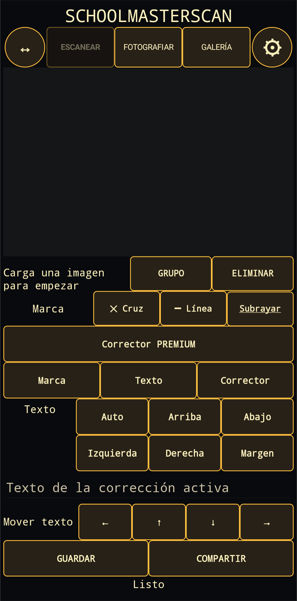

1. Captura una imagen
Escanear es el modo predeterminado: SchoolMasterScan abre el escáner de documentos integrado en Android/Google Play services y devuelve el documento capturado al editor. También puedes usar Fotografiar o elegir una imagen existente en la Galería. El botón ↔ adapta la imagen al área de trabajo; el engranaje abre los ajustes.
2. Selecciona y marca el texto
Después del reconocimiento de texto, toca una palabra de la imagen. Grupo amplía la selección y Eliminar quita una selección. A continuación puedes aplicar una cruz, una línea o un subrayado. Los colores y el tipo de marca predeterminado se configuran en los ajustes.
3. Añade una corrección
Escribe el contenido en el campo de la corrección activa y elige su posición: automática, arriba, abajo, izquierda, derecha o en el margen. Usa las flechas para realizar pequeños ajustes finales.
Corrector Premium
El corrector blanco es una función Premium opcional que se adquiere por separado. Permite cubrir una parte de la imagen y, si es necesario, añadir texto nuevo en la zona corregida.
4. Guarda o comparte
Guardar crea la imagen JPEG final en la galería del dispositivo. Compartir abre el menú de Android para enviarla a otra aplicación. Comprueba siempre el reconocimiento y las correcciones antes de terminar.